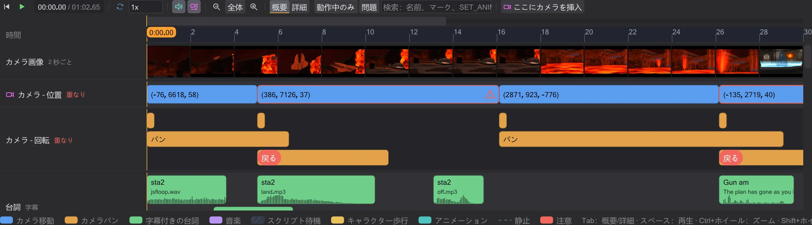
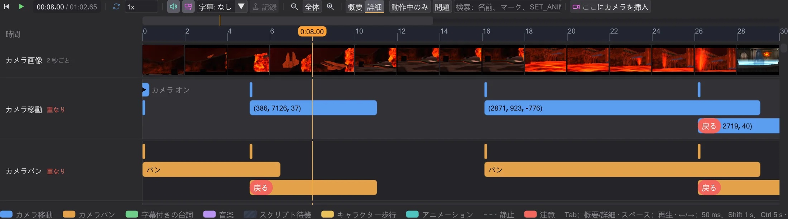
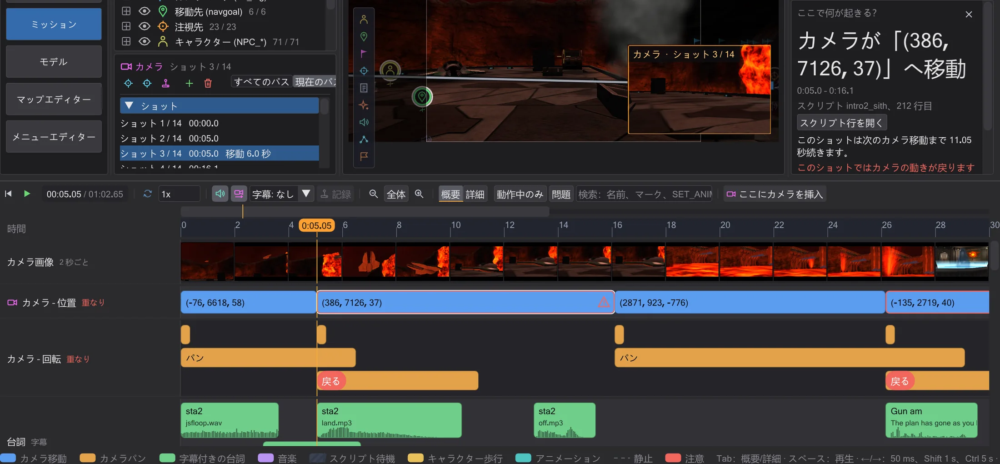
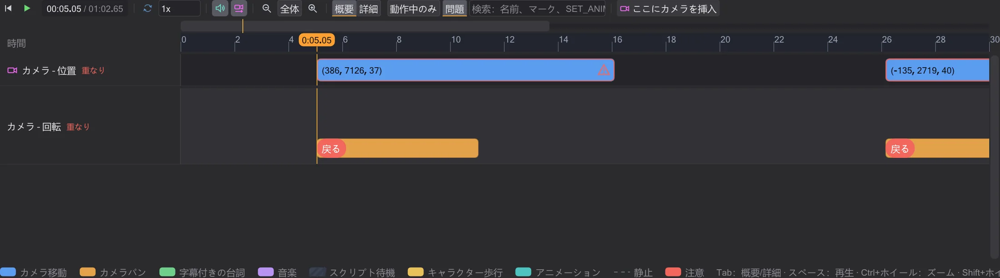
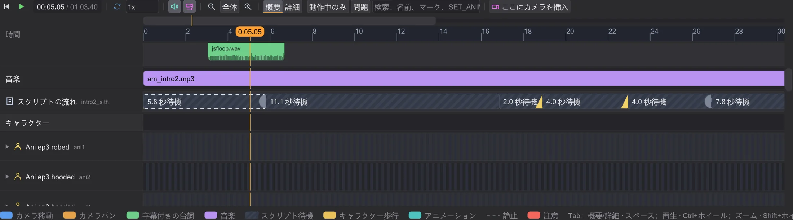
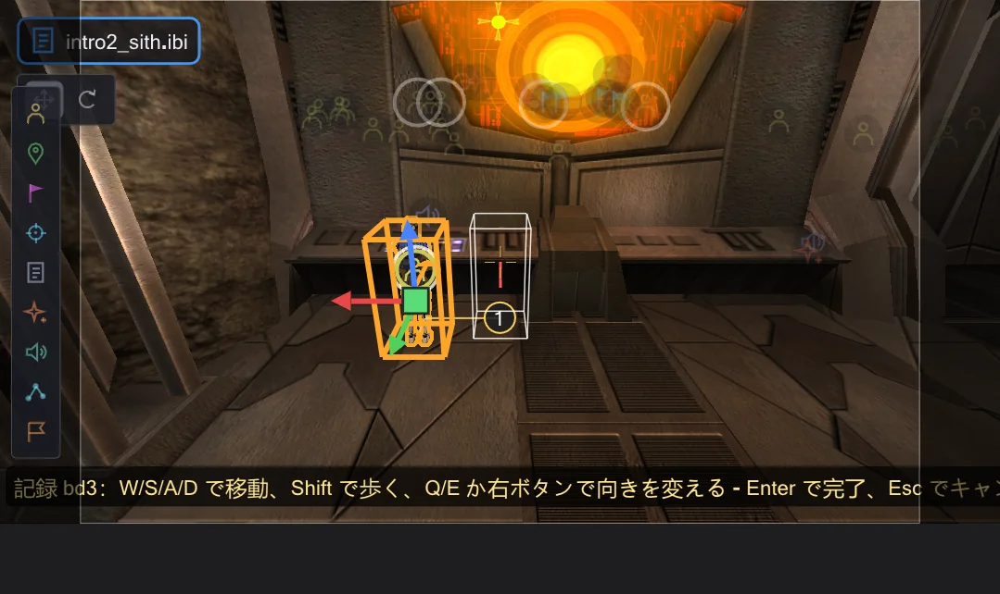
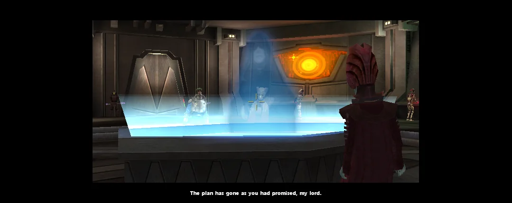

タイムライン
タイムラインはシーンを再生し、何がいつ起こるかを示します。名前付きのカメラショット、字幕付きの台詞、音楽、スクリプトの待機、そして各キャラクター。ブロックをクリックするとサイドバーで説明され、ドラッグするとスクリプトが変わります。

再生と移動#
マップ下の再生ボタン（▶）で再生・停止します。マウスがタイムライン上にあれば スペース でも同じです。ルーラーをクリックまたはドラッグすると時刻が変わり、3D ビューがその瞬間のシーンを映します。← / → で 1 ゲームフレーム（50 ms、ゲームロジックの刻み）、Shift 併用で 1 秒、Ctrl 併用で 5 秒移動し、Home で先頭へ。行の下の凡例にこれらのキーが載っています。速度欄でシーンを遅くでき（音は 1x のときのみ）、ループ で繰り返します。字幕 はプレビュー画像に字幕をゲームと同じように表示します（ゲーム設定 g_subtitles）：スクリプトカメラがオンのとき下の黒帯の中央に 2 行ずつ、各組は文字数に応じた音の長さだけ表示されます。Movie Duels は小さめに描きます（cg_textprintscale、既定値 0.66）。ゲームと同じく Jedi Academy と Movie Duels は既定で表示せず、Jedi Outcast はムービー中に表示し、SET_USE_SUBTITLES のキャラクターは常に台詞を表示します。SET_CAPTIONTEXTCOLOR で色が変わります。
シーンは約 30 秒の範囲で始まります。全体 でシーン全体、− と + で縮小・拡大、Ctrl+ホイールでマウス位置を中心にズーム、Shift+ホイールでスクロール。拡大しているときだけ、ルーラーの上に細いナビゲーションバーが現れ、シーンのどの部分を見ているかを示します。クリックやドラッグでそこへ移動します。
ゲームと同じ音#
プレビューはシーンの音をゲームと同じように鳴らします。聞こえるのはビューが映しているカメラの位置からで、再生中はスクリプトのカメラです。音は毎フレーム調整されます。カメラが離れれば小さくなり、別の場所へカットすればそこの音が聞こえるようになります。聞こえる範囲の外で始まったセリフは無音のまま進みます。ゲームと同じく、ライトセーバーのうなり、スピーカーのループ、ドアやエフェクトの音は、カメラから見える可能性のある音源(カメラの PVS 内)だけが鳴らします。声、ROFF のノート音、壊れる物の音は常に聞こえます。見えていない NPC がセーバーを点けても音はせず、点火音はその NPC が現れたときに鳴ります。音量はゲームの既定値(エフェクト 0.5、声 1.0、音楽 0.25)に従い、編集 → 設定 で変更できます。音は 1x のときだけ鳴ります。
sound ノートは、Movie Duels のルールでは開始位置に留まり、OpenJK のルールではキャラクターと一緒に動きます(設定)。OpenJK のルールでは ROFF の 1 フレームにあるすべてのノートが発動し(Movie Duels と Jedi Outcast は最初の 1 つだけ)、loop sfx <サウンド> は loop sfx kill までエンティティにループサウンドを鳴らします。USE <スクリプト> ノートはそのエンティティでスクリプトを開始し、loop rof absolute|relative はゲームと同じくパスを最初からやり直します(この場合 play のタスクは終わらず、それを待つ dowait は永遠に待ちます)。概要と詳細#
概要 ではシーンをひと目で把握できます。カメラ – 位置 はショットごとに 1 ブロックで、カメラ移動から次の移動まで、マーク名（または読みやすい座標）で表示されます。カメラ – 回転 はパンを示し、長さのないパンはカットとして表示されます。台詞 の各台詞はサウンドファイルと同じ長さで、話者、ゲームの文字列ファイルからの字幕（Jedi Academy と Movie Duels は strings/english/<マップ>.str、Jedi Outcast は strip/<マップ>.sp、一部のマップが読む追加パッケージも含む）、波形付き。音楽 はどの音楽がいつから流れるかを示します。スクリプトの流れ はスクリプトの待機を斜線のブロックで何を待っているかとともに示し、コマンドはラベル付きのマークで示します。マップ切り替えは赤いマークです。キャラクターは 1 行ずつで、上に意味のあるアニメーションと名前、下に番号付きの移動、静止しているところは破線、見えないところは斜線です。名前の矢印で アニメーション と コマンド が開きます。

詳細（またはタイムライン上で Tab）はカメラを移動・パン・ズーム・フェードに分け、視野とフェードを線で描きます。ゲームは直線的に補間するので、2 つのコマンドの間は直線です。イージングカーブはありません。同じ種類の前の動きが終わる前にカメラの動きが始まると、専用のレーンと赤い 戻る が表示されます。ゲームは動きの終わりに位置と角度を確定するため（cg_camera.cpp）、新しい動きは前の動きの開始位置から計算され、カメラが戻ります。
ここで何が起きる？#

ブロックやマークをクリックすると、時刻がそこへ移動し、スクリプトの行が選択され、スクリプト列の下の ここで何が起きる？ 欄が、その動作をわかりやすく説明します。カメラがどこへどれだけの時間で動くか、誰がどの台詞を話すか、wait が何を待ち誰がそのシグナルを送るか、どのアニメーションがどれだけ続くか。スクリプト行を開く でコマンドをエディタで開きます。別のスクリプト（run、use、spawnscript）から来たコマンドはそのスクリプト名とその中の行を示し、スクリプト行を開く でそのスクリプトを開いて行を選択します。シミュレーションが挿入したものには行がありません。
フィルターと検索#
動作中のみ は表示範囲で何もしていないキャラクターを隠します。問題 は注意のある箇所だけを表示します。戻るカメラ移動、プレビューがまだ再現しないコマンド、マップ切り替え。検索欄は名前、マーク、ファイル、字幕、コマンドで絞り込みます（例：luke、cam1b、SET_ANIM）。

ドラッグで時間を変える#
カメラのブロックや台詞を左右にドラッグすると、その前の wait が変わり、早まったり遅れたりして後ろのすべてが一緒に動きます。Alt を押すと後ろの wait が同じだけ短くなり、残りは動きません。カメラのブロックの右端をドラッグすると長さが、待機の右端をドラッグすると待ち時間が変わります。台詞の長さはサウンドファイルの長さなので変わりません。移動の長さはドラッグで変えられません。経路探索とキャラクターの速度で決まります。すべてゲームの 50 ms フレームにスナップし、ドラッグ中はスクリプトで何が変わるかが表示されます。

ドラッグのたびに値がスクリプトに書き込まれ（コメントと書式はそのまま）、Ctrl+Z の 1 ステップになります。元に戻すとスクリプトはバイト単位で元どおりです。
歩きを記録する#
ビューか行でキャラクター（NPC）を選び、トランスポートバーの 記録 を押すと、再生位置の時刻からプレビューで操作できます。W/S/A/D で移動、Shift で走らず歩き、Q/E か右ボタンで向きを変えます。ゲームの移動コード（Pmove）で、.npc ファイルの速度で動き、マップの壁に当たります。カメラがキャラクターを追い、キャラクターはそのモデルで走るか歩きます。道が描かれ、番号付きの円が書き込まれる移動目標です。完了（Enter）で書き込み、キャンセル（Esc）では何も変わりません。

書き込まれるのは、ゲームが NPC を歩かせる方法です：点ごとに ref_tag と set ( SET_NAVGOAL, ... )（ゲームではキャラクターが到着するまで待つ）、歩き方が変わる所ではその前に SET_RUNNING/SET_WALKING。点は必要な所だけに残ります：道が直線から許容差（単位、記録中に調整可）以上外れる所、直線が壁にぶつかる所、歩き方が変わる所。コマンドは再生位置の時刻にキャラクター自身のコマンドへ入ります（なければ新しい affect ブロック）。Ctrl+Z の 1 ステップです。その後プレビューはゲームと同じように歩きます：点の間は NPC が自分の速度で自分の道を探します。区間ごとの時間はゲームにないため、記録が決めるのは点と歩き方だけです。

wait は書かれた値より 1 ゲームフレーム（50 ms）遅れて終わり、dowait は指定したタスクを待ちます。プレビューがまだ再現しないコマンド（camera ( TRACK ) や print など）は推測せず赤いマークで示します。ルールは 設定 の設定どおり OpenJK または Movie Duels です。